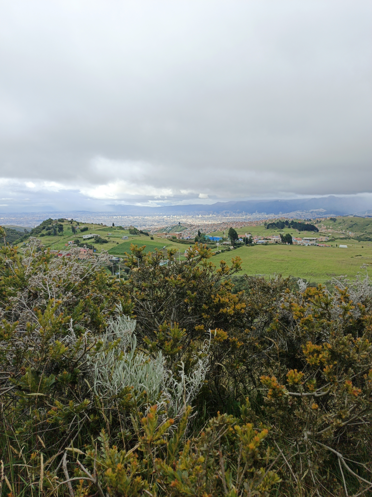
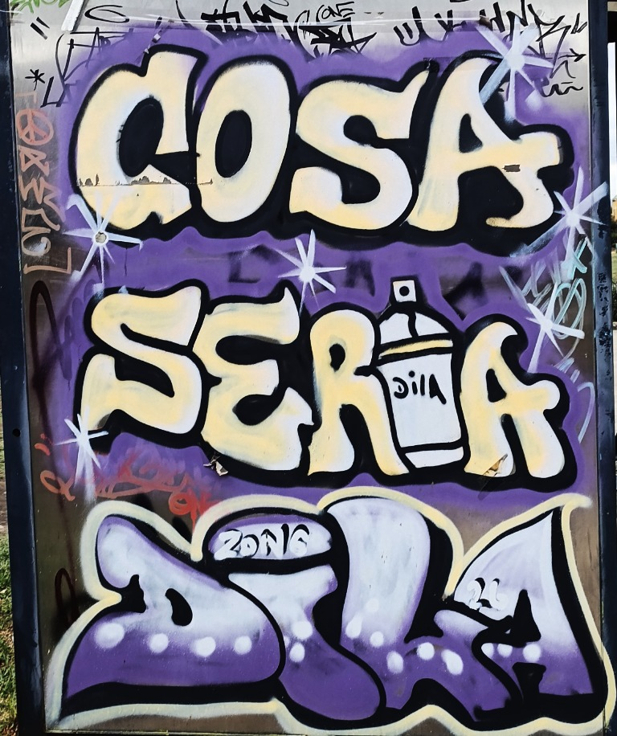
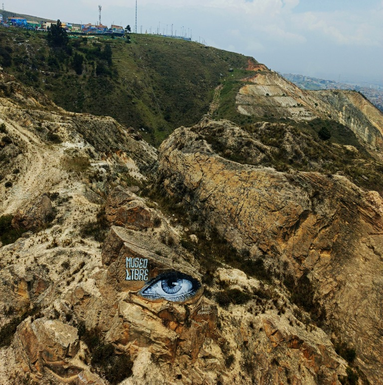

Montañas y paisaje
Próxima fotografía
Los cerros, las nubes y los cambios de luz sobre el territorio.

Archivo fotográfico de la localidad
Un álbum abierto para mirar Ciudad Bolívar desde sus muros, sus calles y sus paisajes.
Este espacio está listo para reunir fotografías y relatos visuales de la localidad. Cada sección puede crecer con nuevas colecciones, lugares, fechas y miradas de quienes habitan el territorio.

01 / EXPRESIÓN
Una colección de murales y expresiones gráficas del barrio San Francisco.
Ver fotografías
Una colección de murales y expresiones gráficas del barrio Candelaria la Nueva.
Ver fotografías
El barrio Paraíso o el Mirador, hace parte de esta localidad. Las fotografías tomadas aquí son en gran parte del pasillo que conduce hacia el Mirador de Paraíso: un gran parque con diferentes zonas de juegos para niños, para hacer skate o simplemente disfrutar de la vista. Se trata de un gran pasillo de concreto, algunas lozas e intersecciones verdes.
Ver fotografías


Los cerros, las nubes y los cambios de luz sobre el territorio.
Rutas, pasos y conexiones entre comunidades y paisaje.
Plantas, cultivos y escenas de la vida cotidiana rural.